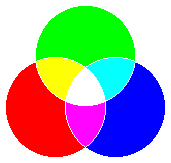

Hilfe
Color


Aufruf
Parameter
Rückgabewert
Beschreibung
Zusatzinformation
Beispiel
Siehe auch
Color red, green, blue
Parameter
| red, green, blue | Gibt die Farbintensitäten der jeweiligen Farben an. Es sind nur Werte zwischen 0 und 255 möglich. |
Rückgabewert
-
Beschreibung
Diese Anweisung setzt die Zeichenfarbe für Grafikbefehle wie Line , Oval, Rect und Plot. Mit dem Befehl können beliebige Farben zusammengemischt werden. Tipp: verwende Mischwerkzeug aus Paint, um eine Farbe zu bestimmen.
, Oval, Rect und Plot. Mit dem Befehl können beliebige Farben zusammengemischt werden. Tipp: verwende Mischwerkzeug aus Paint, um eine Farbe zu bestimmen.
Ein RGB-Wert, das als Integer gespeichert wird, muss immer umgewandelt werden. Dies kostet viel Rechenzeit. Mit einem Trick kann man es dennoch übergeben: Lass die ersten zwei Parameter frei und übergebe mit dem Parameter "Blau" den Farbwert. Auch ein HEX-Wert kann somit schnell übergeben werden (z.B. Color 0, 0, $FFFFFF).
0, 0, $FFFFFF).Zusatzinformation
Die Farbe auf allen Bildschirmen wird aus den drei Grundfarben des additiven Farbmodells zusammengemischt - rot, grün und blau. Es können somit zwar nicht alle sichtbaren Farben abgedeckt werden, dennoch sind es sehr viele. Je größer der Lichtanteil einer Farbe, desto heller wird das Licht. Werden z.B. alle drei Grundfarben zusammengemischt, so entsteht weißes Licht.

Bei einem 16-Bit Grafikmodus können nicht alle Farben dargestellt werden. Dadurch können Farbsprünge entstehen und eine leicht verfälschte Farbe ermittelt werden. Benutze eine höhere Farbtiefe, um dies zu verhindern.
Wie 16 Bit-Farben intern verwaltet werden:
Die Bits 0-4 (5x) speichern den Blauanteil.
Die Bits 5-10 (6x) speichern den Grünanteil.
Die Bits 11-15 (5x) speichern den Rotanteil.
Logischerweise können Blau- und Rotanteile nur 32 verschiedene Abstufungen von 0 bis 248 im Abstand von 8 aufweisen. Grünanteile können dagegen 64 verschiedene Abstufungen von 0 bis 254 im Abstand von 4 aufweisen. Dies kann man für bessere Farben ausnutzen: wähle eine Farbe, die auch im 16 Bit-Modus korrekt dargestellt wird z.B. statt der Farbe 255,255,255 besser 248,248,248 nehmen.
Die Bits 0-4 (5x) speichern den Blauanteil.
Die Bits 5-10 (6x) speichern den Grünanteil.
Die Bits 11-15 (5x) speichern den Rotanteil.
Logischerweise können Blau- und Rotanteile nur 32 verschiedene Abstufungen von 0 bis 248 im Abstand von 8 aufweisen. Grünanteile können dagegen 64 verschiedene Abstufungen von 0 bis 254 im Abstand von 4 aufweisen. Dies kann man für bessere Farben ausnutzen: wähle eine Farbe, die auch im 16 Bit-Modus korrekt dargestellt wird z.B. statt der Farbe 255,255,255 besser 248,248,248 nehmen.
Beispiel
Standardbeispiel:
Siehe auch